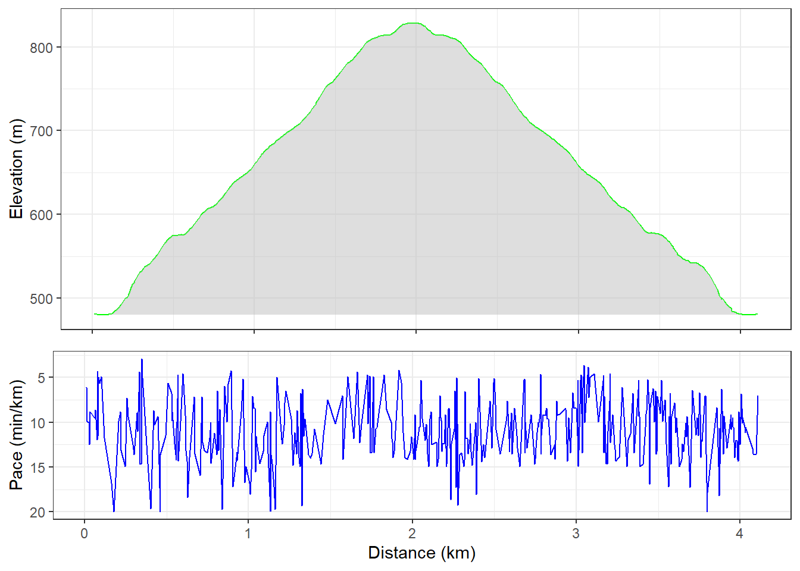

Banyak orang saat ini menggunakan Strava untuk berbagi pencapaian mereka ketika melakukan aktivitas olahraga. Dengan Strava, kamu dapat dengan mudah memantau dan berbagi rute saat hiking, berlari, bersepeda, berkuda hingga mengemudi. Selain itu, kamu bisa melihat rincian seperti jarak, waktu, dan kecepatan rata-rata. Yang lebih menarik, Strava memungkinkan kamu berinteraksi dengan komunitas olahraga, sehingga kamu dapat memotivasi teman-teman atau mengikuti pencapaian mereka.
Sebagai orang yang juga kompetitif, saya juga menggunakan Strava untuk dapat mengejar pencapaian teman-teman saya. Dalam blog ini saya akan berbagi cara untuk meniru visualisasi data yang biasa dihasilkan oleh strava menggunakan R.
Data yang diperlukan
Dalam simulasi ini, kita akan menggunakan rute GPX yang dihasilkan dari trekking di Bukit Paniisan. Unduh data tersebut melalui tautan berikut ini; data_trekking_gpx. Lalu unduh paket yang diperlukan dalam daftar paket dibawah ini
Membaca data GPX
Mengunggah data GPX dan mengambil informasi yang dibutuhkan ke dalam data frame
# Membaca data gpx
gpx_data <- htmlTreeParse(file = "Ngebukit.gpx", useInternalNodes = TRUE)
# Mengakses data kordinat, elevasi dan waktu
coords <- xpathSApply(doc = gpx_data, path = "//trkpt", fun = xmlAttrs)
elevation <- xpathSApply(doc = gpx_data, path = "//trkpt/ele", fun = xmlValue)
datetime <- xpathSApply(doc = gpx_data, path = "//trkpt/time", fun = xmlValue)
# Mengatur ke dalam dataframe
df <- data.frame(
lon = as.numeric(coords["lon", ]),
lat = as.numeric(coords["lat", ]),
elevation = as.numeric(elevation),
datetime = as_datetime(datetime, tz="Asia/Bangkok")
)
head(df) lon lat elevation datetime
1 106.9304 -6.592982 481.4 2023-09-03 08:48:20
2 106.9304 -6.592972 481.3 2023-09-03 08:48:21
3 106.9304 -6.592963 481.3 2023-09-03 08:48:22
4 106.9304 -6.592954 481.3 2023-09-03 08:48:23
5 106.9304 -6.592945 481.3 2023-09-03 08:48:24
6 106.9304 -6.592936 481.3 2023-09-03 08:48:25Kemudian, kita akan mengondisikan data tersebut untuk mendapatkan informasi jarak trajectories (pergerakan dari satu titik GPS ke titik berikutnya), dan tempo (waktu yang dibutuhkan untuk mencapai jarak tempuh sejauh 1 km)
# Menghitung jarak (dalam meter) antara dua titik GPS berturut-turut menggunakan formula Haversine
df <-
df %>%
mutate(lat_lead = lead(lat)) %>%
mutate(lon_lead = lead(lon)) %>%
rowwise() %>%
mutate(dist_to_lead_m = distm(c(lon, lat),
c(lon_lead, lat_lead),
fun = distHaversine)[1,1]) %>%
ungroup()
# Menghitung selisih waktu (dalam detik) antara titik GPS berturut-turut
df <-
df %>%
mutate(datetime_lead = lead(datetime)) %>%
mutate(ts_diff_s = as.numeric(difftime(datetime_lead,
datetime, units = "secs")))
# Menghitung kecepatan dalam meter per detik dan kilometer per jam
df <-
df %>%
mutate(speed_m_per_sec = dist_to_lead_m / ts_diff_s) %>%
mutate(speed_km_per_h = speed_m_per_sec * 3.6)
# Menghitung jarak akumulasi
df <-
df %>%
mutate(distance = cumsum(dist_to_lead_m))
# Menghapus nilai yang hilang (NAs) dan jarak 0
df <- na.omit(df)
df <- df[!grepl("0", df$dist_to_lead_m),]
# Menghitung tempo dalam menit per kilometer
df <-
df %>%
mutate(pace_minperkm = ((ts_diff_s/60) /(dist_to_lead_m/1000)))
# Menghapus beberapa kolom yang tidak akan digunakan lagi
df <-
df %>%
select(-c(lat_lead, lon_lead,
datetime_lead, ts_diff_s))
# Menampilkan data yang sudah dikelola
head(df) %>% as.data.frame() lon lat elevation datetime dist_to_lead_m
1 106.9304 -6.592958 481.2 2023-09-03 08:48:27 2.728283
2 106.9304 -6.592934 481.2 2023-09-03 08:48:28 1.684376
3 106.9304 -6.592847 481.0 2023-09-03 08:48:34 1.662734
4 106.9305 -6.592823 480.9 2023-09-03 08:48:37 1.335520
5 106.9305 -6.592811 480.8 2023-09-03 08:48:46 1.882918
6 106.9307 -6.592979 480.3 2023-09-03 08:49:01 1.749643
speed_m_per_sec speed_km_per_h distance pace_minperkm
1 2.728283 9.821817 11.95751 6.108849
2 1.684376 6.063752 13.64189 9.894863
3 1.662734 5.985842 23.87679 10.023653
4 1.335520 4.807871 27.48938 12.479537
5 1.882918 6.778506 31.36685 8.851508
6 1.749643 6.298716 62.28717 9.525751Membuat plot elevasi dan tempo
Setelah itu, kita bisa membuat grafik yang menggambarkan plot elevasi sepanjang jarak tempuh dan tempo.
# Plot Elevasi
plot_elevation <- df %>%
ggplot(aes(x = distance/1000, y = elevation)) +
geom_line(color="green") +
geom_ribbon(aes(ymin = min(elevation), ymax = elevation),
fill = "gray", alpha = 0.5) +
ylab("Elevation (m)") +
xlab("Distance (km)") +
theme_bw() +
theme(axis.title.x = element_blank(),
axis.text.x = element_blank())
# Plot Tempo
plot_pace <- df %>%
filter(pace_minperkm < 20) %>%
ggplot(aes(x = distance/1000, y = pace_minperkm)) +
geom_line(color = "blue") +
labs(y = "Pace (min/km)") +
xlab("Distance (km)") +
scale_y_reverse() +
theme_bw()
# Menggabungkan kedua plot menggunakan plot_grid dari cowplot
combined_plot <- plot_grid(plot_elevation, plot_pace, ncol = 1, rel_heights = c(3, 2))
# Menampilkan plot yang digabungkan
combined_plot
Plot rute tersebut pada peta
Lalu kita akan menambahkan anotasi penanda jarak tempuh dalam jalur tersebut di setiap 1 km, lalu menampilkan rute trekking tersebut pada peta.
# Menampilkan jalur trekking pada peta
leaflet() %>%
addTiles() %>%
addPolylines(data = df, lat = ~lat, lng = ~lon) %>%
addMarkers(data = df_dist_marks, lat = ~lat, lng = ~lon, label = ~dist_m_cumsum_km_floor,
labelOptions = labelOptions(noHide = T, direction = 'top', textOnly = T))Selanjutnya, kita juga dapat meningkatkan atau memperkaya informasi jalur pergerakan kita dengan menggunakan fungsi dibawah ini untuk membuat rentang elevasi dalam jalur trekking.
# Buat fungsi untuk mendapatkan warna berdasarkan rentang elevasi
get_color <- function(elevation) {
if (elevation < 567) {
return("green")
}
if (elevation < 656) {
return("yellow")
}
if (elevation < 757) {
return("orange")
}
return("red")
}
# Buat dataset baru dengan variabel warna
df_color <- df %>%
rowwise() %>%
mutate(color = get_color(elevation))
# Tambahkan kolom warna sebelumnya menggunakan fungsi lag dari dplyr
df_color$last_color <- dplyr::lag(df_color$color)# Buat peta yang sudah ada gradasi elevasi
map <- leaflet() %>% addTiles()
for (color in levels(as.factor(df_color$color))) {
map <- addPolylines(map, lat = ~lat, lng = ~lon, data = df_color[df_color$color == color | df_color$last_color == color, ], color = ~color) %>%
addLabelOnlyMarkers(data = df_dist_marks, lat = ~lat, lng = ~lon, label = ~dist_m_cumsum_km_floor,
labelOptions = labelOptions(noHide = T, direction = 'top', textOnly = T, icon=NULL))
}
mapPenutup
Contoh diatas merupakan salah satu hal yang bisa dilakukan oleh R dengan data GPX. Kedepannya mungkin saya akan berbagi cara bagaimana meganimasikan rute tersebut.